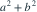

独立同分布，密度为 。在 中，要求 T 无偏估计 θ 且方差最小，则 a 为？
独立同分布，密度为 。在 中，要求 T 无偏估计 θ 且方差最小，则 a 为？- A

- B

- C

- D

我已思考，展开答案与解析
正确答案：C
- ，无偏要求 。共同方差固定，最小化

得 。
易错提醒先明确分布参数、独立性和统计量的定义，再进行计算。
用户提供练手卷 · 原第 20 题；题目 PDF 第 4 页
单选改编；题干与选项已重新编排
独立同分布，密度为 。在 中，要求 T 无偏估计 θ 且方差最小，则 a 为？
得 。用户提供练手卷 · 原第 20 题；题目 PDF 第 4 页
单选改编；题干与选项已重新编排